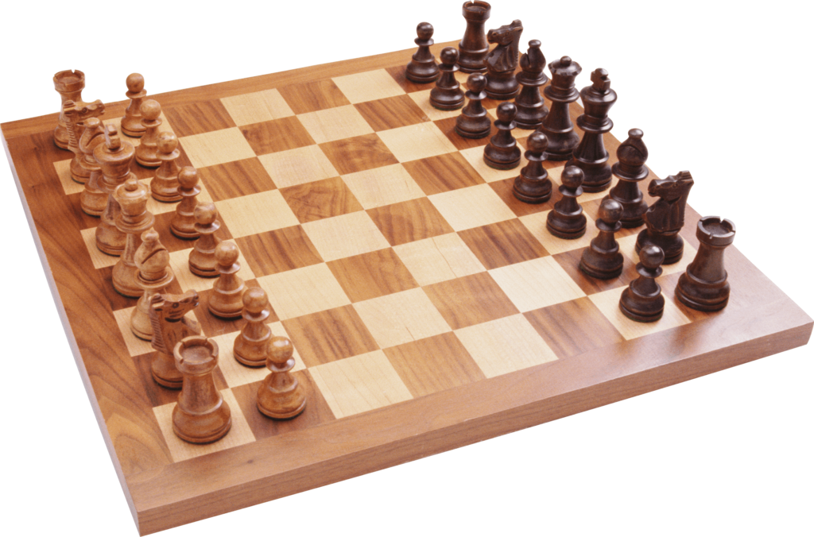
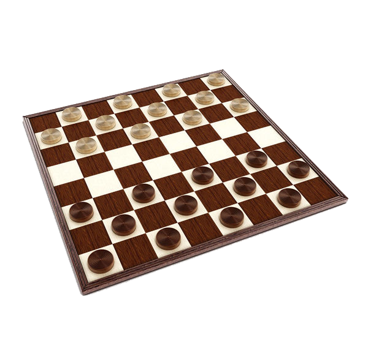
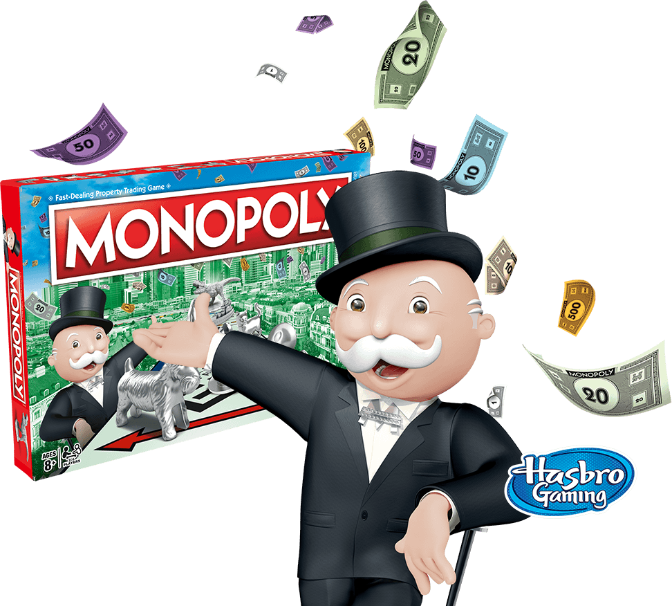
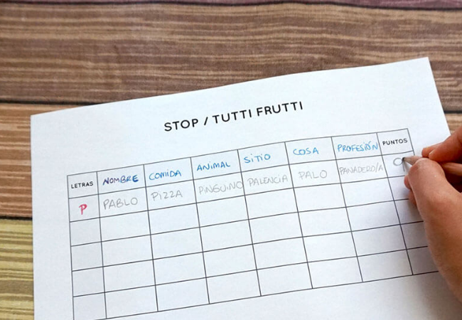

Estos son algunos de los juego más populares:
Ajedrez
Surge en .....
Tiene su origen en la India, más concretamente en el valle del Indo, y data del siglo VI d.C. Originalmente conocido como Chaturanga, o juego del ejército, se difundió rápidamente por las rutas comerciales, llegó a Persia, y desde allí al Imperio bizantino, extendiéndose posteriormente por toda Asia. El mundo árabe adoptó el Ajedrez con un entusiasmo sin igual: estudiaron y analizaron en profundidad los mecanismos del juego, escribieron numerosos tratados sobre Ajedrez y desarrollaron el sistema de notación algebraica.
Damas
Surge en .....
La historia del juego de damas puede ser rastreada hasta la cuna de la civilización, donde los vestigios de la más antigua forma de juego fueron descubiertos en una excavación arqueológica en la antigua ciudad de Ur, en el sur de Mesopotamia, que ahora es la actual Irak. Nadie está seguro de las reglas exactas del juego, que fue de carbono en 3000 aC. Un juego similar con un tablero de 5x5, llamado Alquerque es conocido por haber existido en el antiguo Egipto, ya en el 1400 aC. Esta versión egipcia era tan popular que el hombre tocó para miles de años. En el año 1100, un francés innovó el juego en un tablero de ajedrez y aumentó el número de piezas para cada jugador.
Monopoly
Surge en .....
Su inventora, la estadounidense Elizabeth Magie, lo creó en 1903 con el nombre de The Landlord’s Game. Lizzie Magie era una mujer de carácter rebelde y poco convencional. Contra las costumbres de la época, había cumplido los cuarenta años sin contraer matrimonio. Ella estaba orgullosa de llevar una vida independiente y profesaba convicciones feministas: “Las chicas no somos máquinas. Tenemos inteligencia, deseos, esperanzas y ambiciones”.Su juego tenía un propósito pedagógico: difundir las ideas del economista Henry George, que en sus obras se mostraba muy crítico con las prácticas monopolísticas. Según su teoría económica, la tierra debía estar en manos de la colectividad.
Tutti Frutti
Surge en .....
No se sabe exactamente cuándo se inventó el juego, en qué época o en qué lugar en particular, pero ciertamente nació entre los pupitres de la escuela. Es en esa área donde tiene más éxito y en poco tiempo se vuelve popular también en varias partes del mundo porque es simple, divertido y requiere poco material para usar. Pero sin dudas su nombre le da el toque ítalo-argentino. Su nombre tutti frutti se puede interpretar como un dicho argentino “mándale fruta” quizás por la rapidez y el apuro en el que hay que escribir la palabra en cada categoría para poder sacar la máxima cantidad de puntos.